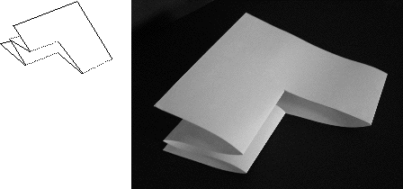
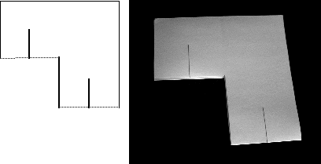

Refold inward so the piece on the left goes between the halves of the large sheet of paper.
|  |
| The first fold refolded inward |
Mark the middle of each half on either side of the first cut and make a cut half the length of the first cut.
|  |
| The second cuts |
Return to the Sierpinski gasket.